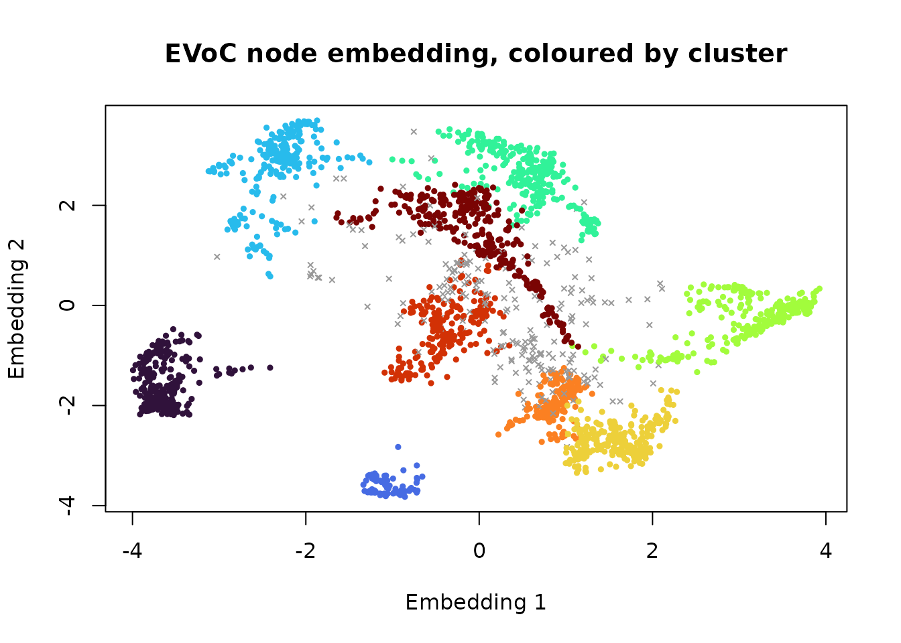

Embedding models turn text, images and other objects into vectors
whose directions carry meaning: two posts about the same thing point the
same way. Clustering such vectors is how topics are discovered in a
corpus, and it is what shoal_evoc() is for. This vignette
runs it on real sentence embeddings, looks at what it returns, and
compares it with the other ways of clustering the same vectors.
The data
newsgroups holds 2,400 posts from eight groups of the 20
Newsgroups corpus, embedded with a sentence-transformer and reduced to
64 dimensions (see ?newsgroups for how). The group each
post came from is kept for scoring, along with the opening of each post
for reading.
str(newsgroups)
#> List of 3
#> $ embedding: num [1:2400, 1:64] 0.402 0.348 0.402 0.29 0.267 ...
#> $ group : Factor w/ 8 levels "comp.graphics",..: 4 4 4 4 4 4 4 4 4 4 ...
#> $ snippet : chr [1:2400] "Here is a review of some of the off-ice things that have affected the AHL this year. ST JOHN'S MAPLE LEAFS PROBLEMS The " "Everyone... Read this. If you have already sent your predictions, please correct the Patrick division if you would like." "Here are the standings after game 1 of each of the divisional semi-finals. (Hey, look who's #4!) I'll try to post the st" "I don't think Primeau is necessarily a bad pick...I'm was just trying to locate the beginning of Murray's decisions...he" ...
table(newsgroups$group)
#>
#> comp.graphics misc.forsale rec.autos
#> 300 300 300
#> rec.sport.hockey sci.med sci.space
#> 300 300 300
#> soc.religion.christian talk.politics.mideast
#> 300 300Scores below are the adjusted Rand index (ARI) against the group labels: 1 for a perfect match, 0 for chance. Noise counts as its own class.
ari <- function(a, b) {
a <- ifelse(is.na(a), -1L, as.integer(factor(a)))
b <- ifelse(is.na(b), -1L, as.integer(factor(b)))
tab <- table(a, b)
comb2 <- function(x) x * (x - 1) / 2
sum_ij <- sum(comb2(tab))
sum_a <- sum(comb2(rowSums(tab)))
sum_b <- sum(comb2(colSums(tab)))
expected <- sum_a * sum_b / comb2(sum(tab))
(sum_ij - expected) / ((sum_a + sum_b) / 2 - expected)
}One call
EVoC needs no number of clusters and no distance threshold. It builds
a nearest-neighbour graph under cosine distance, learns a compact node
embedding of that graph, and density-clusters the embedding at every
granularity it can find. min_cluster_size is the one
parameter worth setting up front: the upstream default of 5 suits
corpora of hundreds of thousands of documents, and over-fragments a few
thousand.
x <- newsgroups$embedding
timing <- system.time(ev <- shoal_evoc(x, min_cluster_size = 30L))
ev
#>
#> ── EVoC Clustering
#> Metric: "cosine"
#> Parameters: n_neighbors = 15, noise_level = 0.5, min_cluster_size = 30,
#> min_samples = 5, n_epochs = 50, seed = 1
#> Clusters: 9, Noise points: 230
#> Layers (finest first, ✔ = selected):
#> 1: 22 clusters, 814 noise, persistence 0
#> 2: 17 clusters, 674 noise, persistence 494.2
#> ✔ 3: 9 clusters, 230 noise, persistence 799.6
timing[["elapsed"]]
#> [1] 0.093
table(cluster = ev$cluster, group = newsgroups$group, useNA = "ifany")
#> group
#> cluster comp.graphics misc.forsale rec.autos rec.sport.hockey sci.med sci.space
#> 1 0 2 0 289 2 0
#> 2 0 0 0 0 0 0
#> 3 10 235 3 1 0 1
#> 4 261 6 0 0 1 4
#> 5 1 0 0 1 265 12
#> 6 0 0 0 0 1 0
#> 7 0 0 1 0 0 0
#> 8 0 0 1 0 2 221
#> 9 1 24 267 0 1 3
#> <NA> 27 33 28 9 28 59
#> group
#> cluster soc.religion.christian talk.politics.mideast
#> 1 0 1
#> 2 1 87
#> 3 0 1
#> 4 0 0
#> 5 7 0
#> 6 266 1
#> 7 6 182
#> 8 0 1
#> 9 1 0
#> <NA> 19 27
ari(newsgroups$group, ev$cluster)
#> [1] 0.7474819Seven of the eight groups come back as a cluster each, with a tenth
of the corpus set aside as noise. The eighth,
talk.politics.mideast, comes back as two clusters. The
labels say that is an error; the posts say otherwise. The opening lines
of a few from each show that the group holds two separate arguments, one
about Turkey, Armenia and Greece and one about Israel and the Holocaust,
and EVoC has found a distinction the labels do not have.
mideast <- table(ev$cluster[newsgroups$group == "talk.politics.mideast"])
halves <- as.integer(names(sort(mideast, decreasing = TRUE)[1:2]))
set.seed(2)
for (h in halves) {
members <- which(!is.na(ev$cluster) & ev$cluster == h)
cat("Cluster", h, "\n")
cat(paste0(" ", substr(newsgroups$snippet[sample(members, 4)], 1, 90)), sep = "\n")
}
#> Cluster 7
#> It seems that President Clinton can recognize Jerusalem as Israels capitol while still kee
#> The comparison of the Palestinian situation with the Holocaust is insulting and completely
#> WASHINGTON - A stark reminder of the Holocaust--a speech by Nazi SS leader Heinrich Himmle
#> i would like to remind my jewish colleague mzm that much of the stories of the holocaust (
#> Cluster 2
#> [...} Living through those days at the age of 20 and following the internal and external n
#> Because, the x-Soviet Armenian government got away with the genocide of 2.5 million Turkis
#> From article <1qvgu5INN2np@lynx.unm.edu>, by osinski@chtm.eece.unm.edu (Marek Osinski): Th
#> Is that what turns you on? The truth needs to be told over and over again. There are ArmenEvery layer, not one
A corpus rarely has one right granularity. EVoC therefore returns
every stable layer of the cluster hierarchy, finest first, and only
chooses which one fills cluster: by default the most
persistent, matching the reference implementation. The others are on the
result.
layer_summary <- data.frame(
layer = seq_along(ev$layers),
clusters = vapply(ev$layers, function(l) length(unique(l[!is.na(l)])), integer(1)),
noise = vapply(ev$layers, function(l) sum(is.na(l)), integer(1)),
persistence = round(ev$persistence, 1),
ari = round(vapply(ev$layers, function(l) ari(newsgroups$group, l), numeric(1)), 3)
)
layer_summary
#> layer clusters noise persistence ari
#> 1 1 22 814 0.0 0.227
#> 2 2 17 674 494.2 0.360
#> 3 3 9 230 799.6 0.747Choosing a different layer afterwards is an index, not a refit:
finest <- ev$layers[[1]]
table(finest, newsgroups$group, useNA = "ifany")[1:6, ]
#>
#> finest comp.graphics misc.forsale rec.autos rec.sport.hockey sci.med sci.space
#> 1 0 0 0 0 0 0
#> 2 0 0 0 30 0 0
#> 3 0 0 0 37 0 0
#> 4 0 0 0 81 0 0
#> 5 0 0 0 66 0 0
#> 6 7 3 1 3 5 6
#>
#> finest soc.religion.christian talk.politics.mideast
#> 1 1 87
#> 2 0 0
#> 3 0 1
#> 4 0 0
#> 5 0 0
#> 6 12 16Seeing the clusters
The node embedding EVoC learned is on the result too. It has four dimensions here, and the clustering used all of them, so the first two give a rough picture rather than an exact one: clusters that overlap in this view are separated in the other two.
k <- ev$n_clusters
plot(ev$embedding[, 1:2],
col = ifelse(is.na(ev$cluster), "grey60", shoal_palette(k)[ev$cluster]),
pch = ifelse(is.na(ev$cluster), 4, 19), cex = 0.5,
xlab = "Embedding 1", ylab = "Embedding 2",
main = "EVoC node embedding, coloured by cluster")
Each observation also has a membership strength for its cluster in
strengths: 1 for a point that joined its cluster at full
density, lower for one that only attached as the density threshold fell.
Two thirds of members score exactly 1, so the strength is a flag for the
doubtful rather than a ranking of the core. The weakest members of the
rec.autos cluster are a mixed bag: a post from another
group, and posts only loosely about cars.
s <- ev$strengths[[ev$layer]]
mean(s[!is.na(ev$cluster)] < 1)
#> [1] 0.340553
autos <- as.integer(names(which.max(table(ev$cluster[newsgroups$group == "rec.autos"]))))
members <- which(!is.na(ev$cluster) & ev$cluster == autos)
weakest <- members[order(s[members])][1:5]
data.frame(strength = round(s[weakest], 2), group = newsgroups$group[weakest],
snippet = substr(newsgroups$snippet[weakest], 1, 55))
#> strength group snippet
#> 1 0.81 rec.autos Not exactly dumb, but who remebers the tachometer on th
#> 2 0.82 misc.forsale My girlfriend switched to gas-permeable hard lenses and
#> 3 0.82 rec.autos seningen@maserati.ross.com (Mike Seningen) The funny th
#> 4 0.83 rec.autos ...and in San Francisco recently, some of our finest ex
#> 5 0.85 rec.autos I was recently thumbing through the 1993 Lemon-Aid NewAgainst the alternatives
Three other ways to cluster the same vectors, with what each needs from you.
library(uwot)
score <- function(name, cluster, seconds) {
data.frame(method = name,
clusters = length(unique(cluster[!is.na(cluster)])),
noise = sum(is.na(cluster)),
ari = round(ari(newsgroups$group, cluster), 3),
seconds = round(seconds, 2))
}
# HDBSCAN straight on the vectors, with the cosine metric.
t_hdb <- system.time(
hdb <- shoal_hdbscan(x, min_cluster_size = 15L, min_samples = 10L,
metric = "cosine", boruvka = FALSE)
)
# UMAP to two dimensions under cosine distance, then HDBSCAN.
set.seed(42)
t_umap <- system.time({
u <- umap(x, n_neighbors = 30, min_dist = 0, metric = "cosine", n_threads = 2)
uh <- shoal_hdbscan(u, min_cluster_size = 40L, min_samples = 10L)
})
# k-means, told the right number of groups.
t_km <- system.time(km <- shoal_kmeans(x, k = 8L))
rbind(
score("EVoC", ev$cluster, timing[["elapsed"]]),
score("HDBSCAN on the vectors", hdb$cluster, t_hdb[["elapsed"]]),
score("UMAP then HDBSCAN", uh$cluster, t_umap[["elapsed"]]),
score("k-means, k = 8", km$cluster, t_km[["elapsed"]])
)
#> method clusters noise ari seconds
#> 1 EVoC 9 230 0.747 0.09
#> 2 HDBSCAN on the vectors 7 1651 0.097 2.54
#> 3 UMAP then HDBSCAN 13 151 0.679 4.16
#> 4 k-means, k = 8 8 0 0.780 0.14HDBSCAN on the raw vectors is the case EVoC exists to fix: in 64 dimensions there is no density contrast to find, so most of the corpus is noise, and the spatial index is slow getting there. UMAP followed by HDBSCAN is the usual remedy and works, at the cost of two stages, two sets of parameters, a stochastic layout, and tens of times the running time. EVoC does the same job in one call, and here does it a little better.
k-means scores well when told there are eight groups. It always will
on a corpus with round, evenly sized topics, and it has no way of saying
when that is not so: it cannot report noise, cannot find eleven topics
when asked for eight, and offers no layers. With a known k
and a clean corpus it is hard to beat; discovering the structure of an
unknown one is the case for EVoC.
Stability
EVoC is stochastic, so seed matters, and as with any
such method the question is whether another seed finds the same
clusters.
runs <- lapply(1:3, function(seed) shoal_evoc(x, min_cluster_size = 30L, seed = seed)$cluster)
round(c(seeds_1_2 = ari(runs[[1]], runs[[2]]),
seeds_1_3 = ari(runs[[1]], runs[[3]]),
seeds_2_3 = ari(runs[[2]], runs[[3]])), 3)
#> seeds_1_2 seeds_1_3 seeds_2_3
#> 0.796 0.882 0.747The runs agree on most of the partition. Where they differ is at the
edges: which doubtful posts are noise, and whether a split like the one
in talk.politics.mideast is made. On a corpus of a few
thousand posts that is the expected amount of variation; it shrinks as
the corpus grows, which is the regime EVoC is built for. The same seed,
data and parameters always give bitwise-identical results, whatever the
thread count.
Practical notes
- Input must be embedding vectors: rows whose direction carries the
meaning. EVoC normalises them and works in cosine geometry throughout.
Tabular measurements are not that; use the other algorithms, and see
vignette("umap")for wide tabular data. - Raise
min_cluster_sizefirst. It sets the finest granularity, and the default of 5 is calibrated for corpora far larger than most. - Read the layers before trusting the selected one. Persistence is a good heuristic, not a law; on nested topic structure the finest layer is often the useful one.
- Expect some noise. Posts that are short, off-topic or between topics land in no cluster, which is information rather than failure.